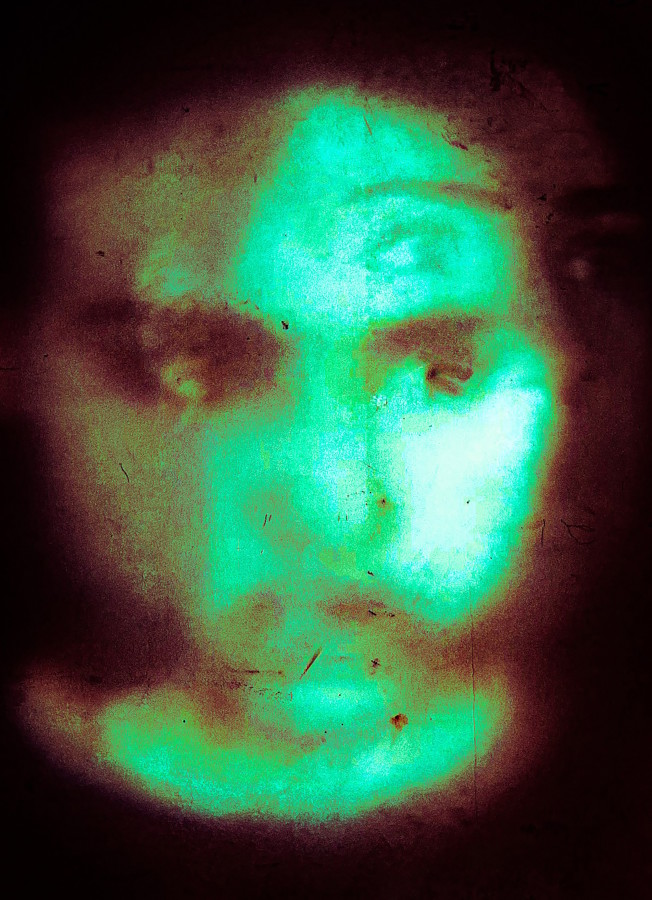
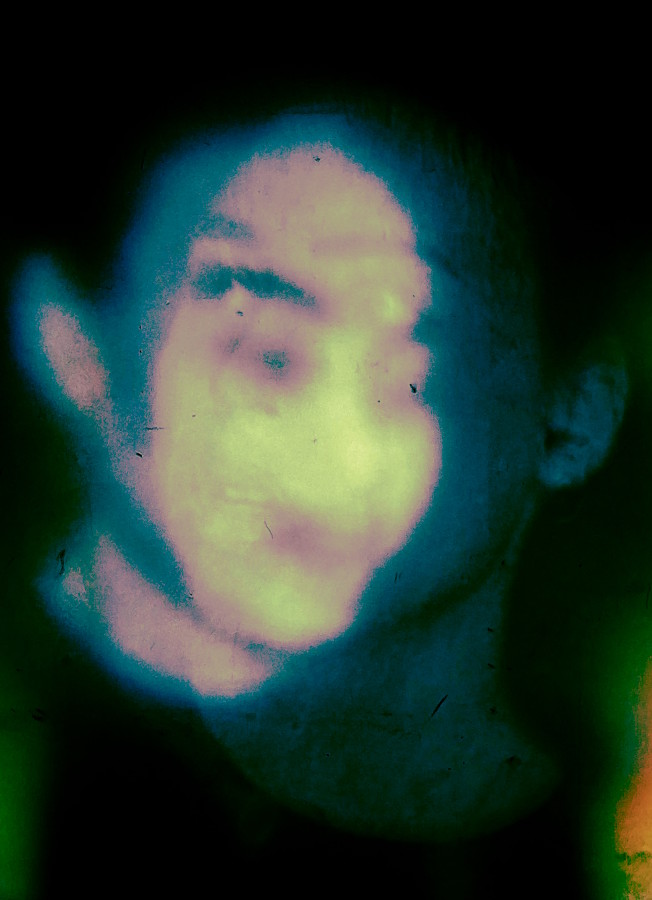
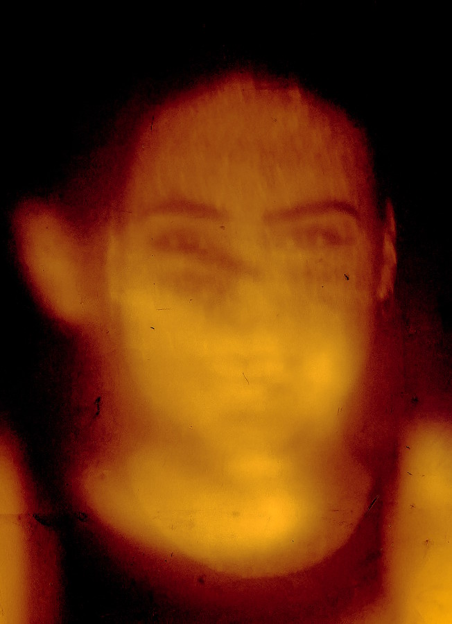
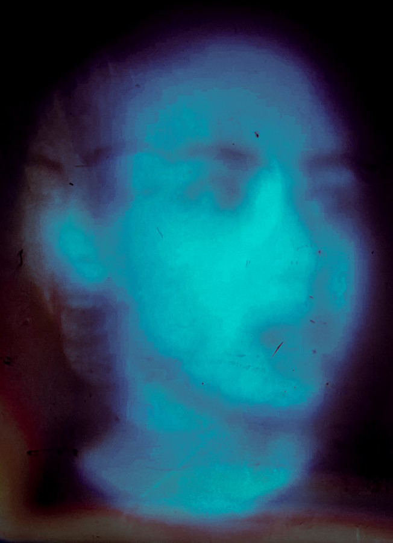
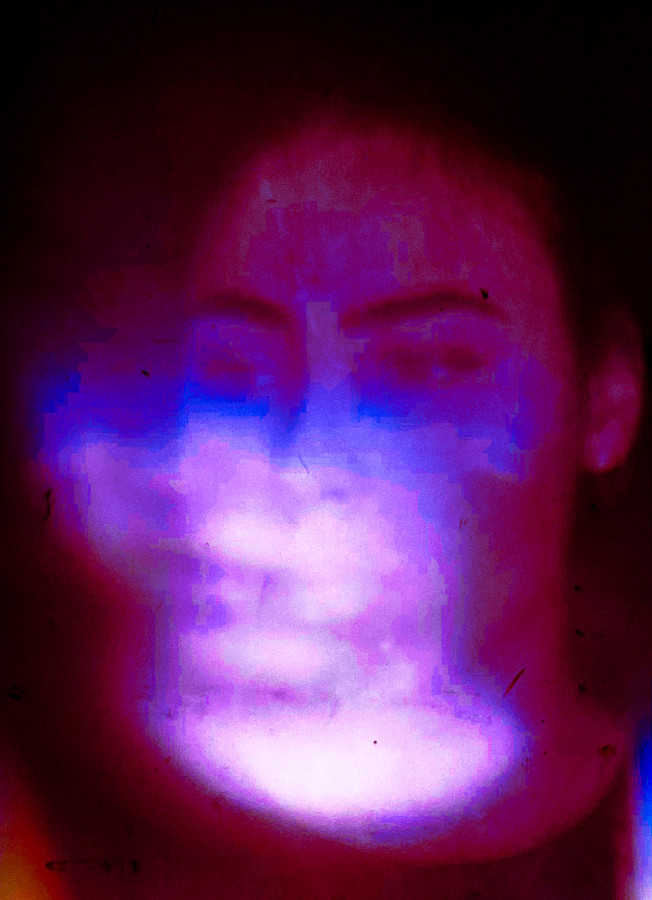
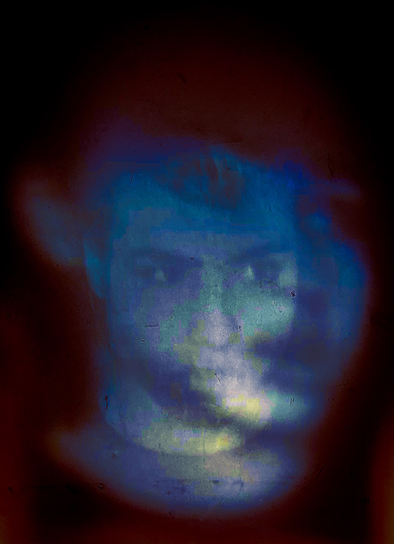
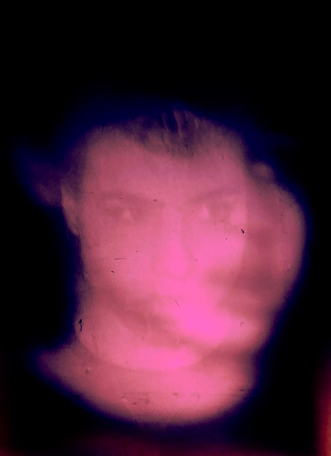
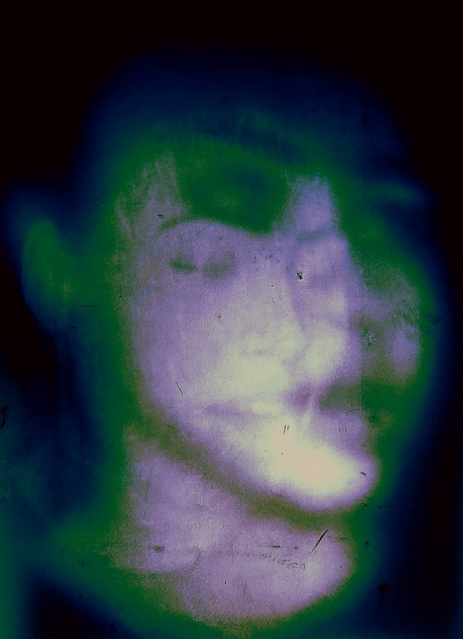
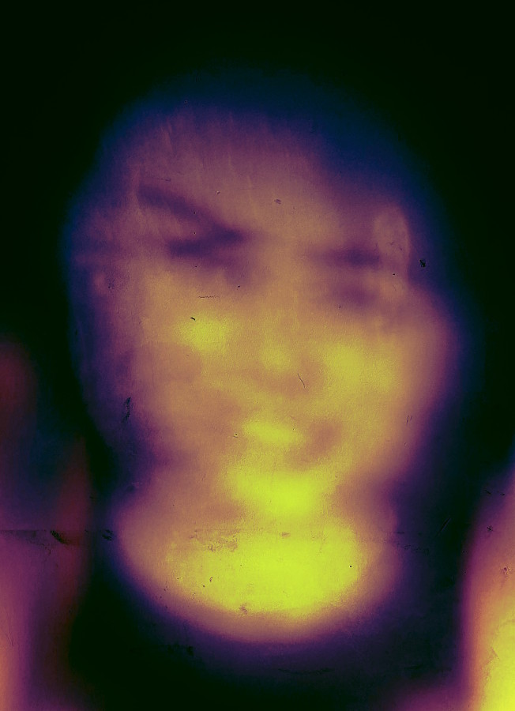

DISRUPT 2023
The works displayed are part of my project DISRUPT, which I worked on during my first semester
at Limerick School of Art and Design. Through this project, I explored the nature of human emotions —
their power, complexity, and the way they shape our inner world. This topic became particularly
important to me after the beginning of the full-scale invasion of Ukraine, when I experienced
feelings and emotions that were completely new to me — some of them containing shades of other
emotions. These emotions can wield control over us and can be disruptive to others.
These photographs were taken using a combination of several projections, representing emotions as
projections of our inner feelings. By layering multiple emotions into one image, I tried to convey
the complexity of our personality. We are multifaceted, and we often feel not one emotion but
layered combinations of different ones.
Series
Серія










Artist Statement
Художнє висловлювання
Emotions are not singular. They are layered, complex, and often contradictory. Through DISRUPT,
I wanted to visualize this complexity — to show how multiple feelings can exist within a single
moment, within a single person. The full-scale invasion of Ukraine brought emotions I had never
encountered before: fear mixed with anger, grief intertwined with resilience, loss shadowed by hope.
I projected different facial expressions onto transparent paper, layering them to create a single
image — a visual metaphor for how emotions overlap and coexist within us. Each photograph captures
a different combination of feelings, printed on translucent material, allowing the layers to interact
and reveal the complexity of our inner world. These images are not portraits in the traditional sense.
They are emotional maps, capturing the turbulence of inner life. The projections themselves serve as
a metaphor: our emotions are projections of our inner world, often visible to others only in fragments.
DISRUPT is about the disruptive nature of emotions — how they can break through our defenses, how
they can overwhelm us, and how they can transform us. It is also about the beauty of that disruption,
the rawness of being truly human.